- Grindstone Speciality Coffee -

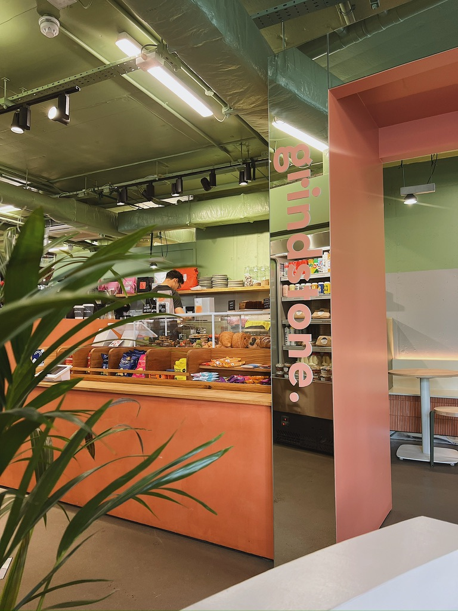
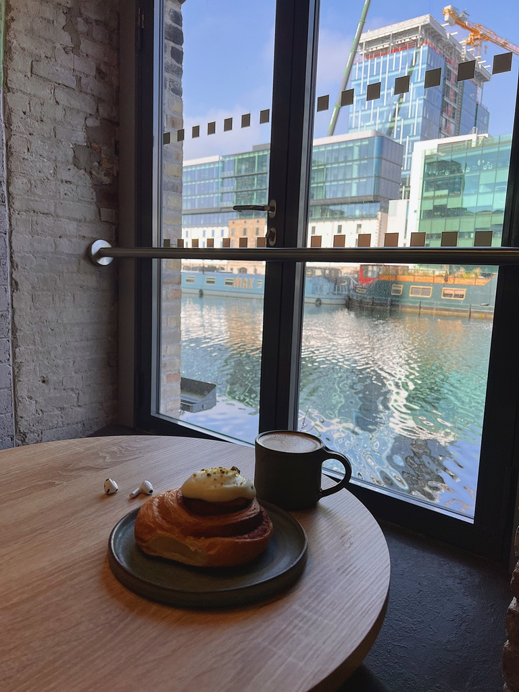
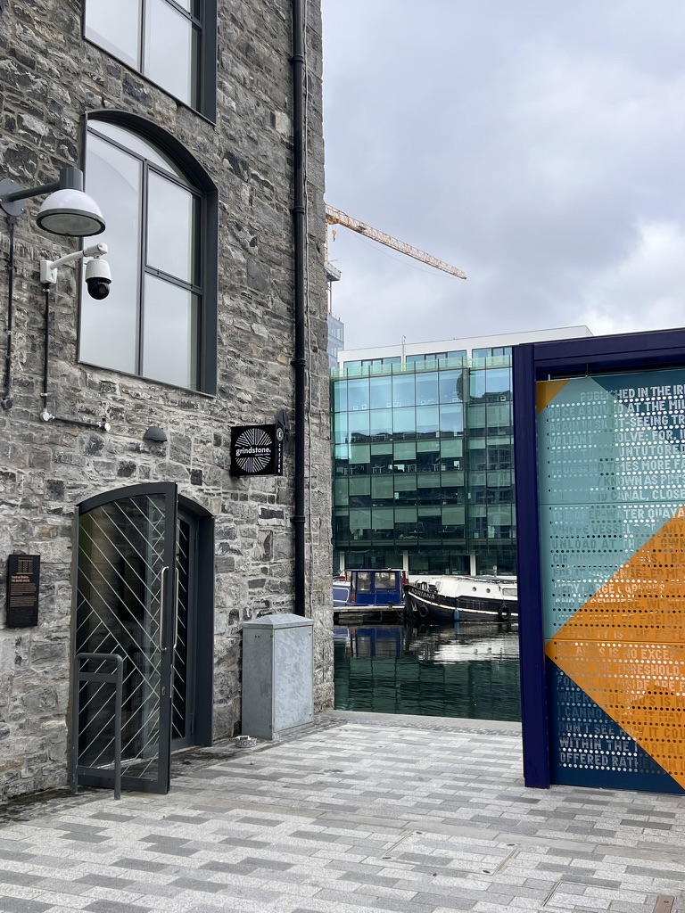
This coffee shop is located by the water in Grand Canal Dock and one of the things that really makes it special is the view. Sitting by the window with a coffee while looking at the canal is a really nice way to take a break in the middle of the city. The coffee is very good and you can tell they care about quality. It's well prepared, smooth and full of flavour. The pastries are also worth mentioning, as they are fresh and delicious.
- Ku.fee -
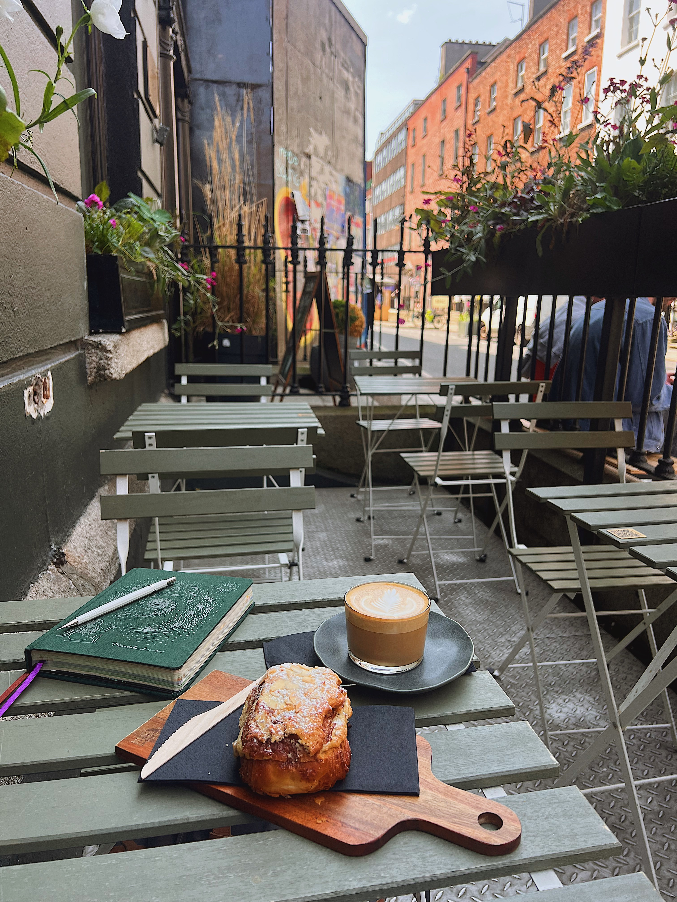
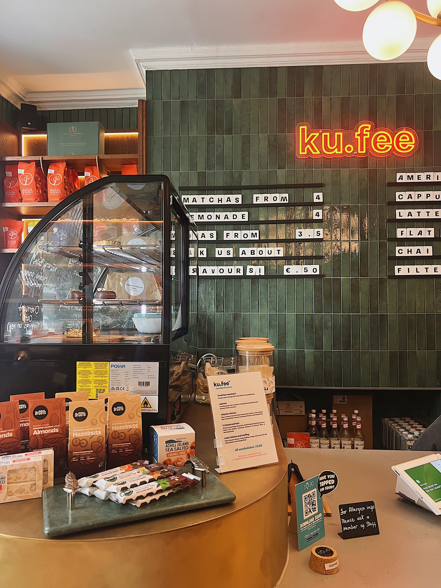
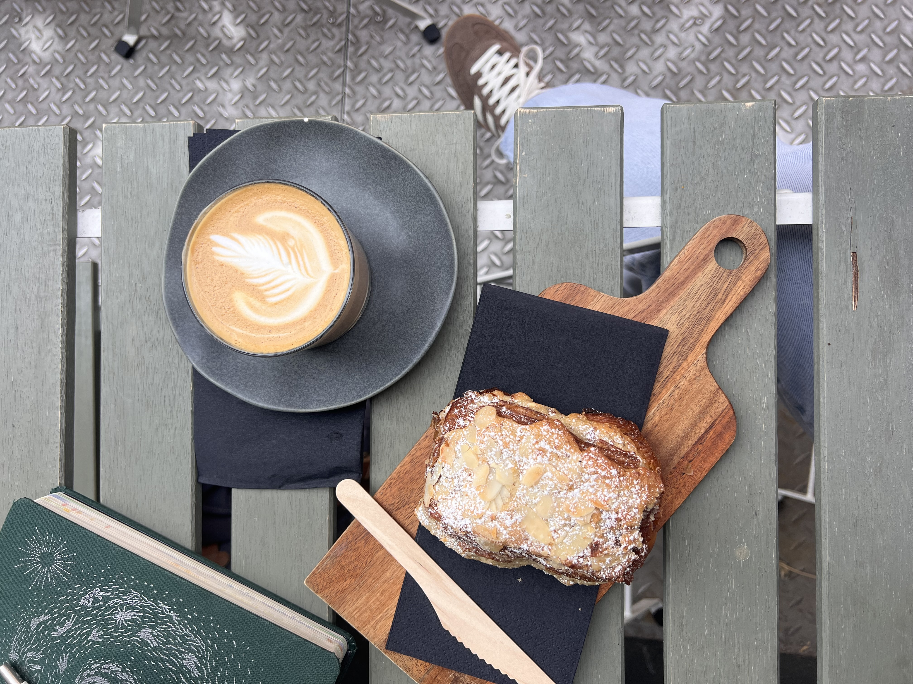
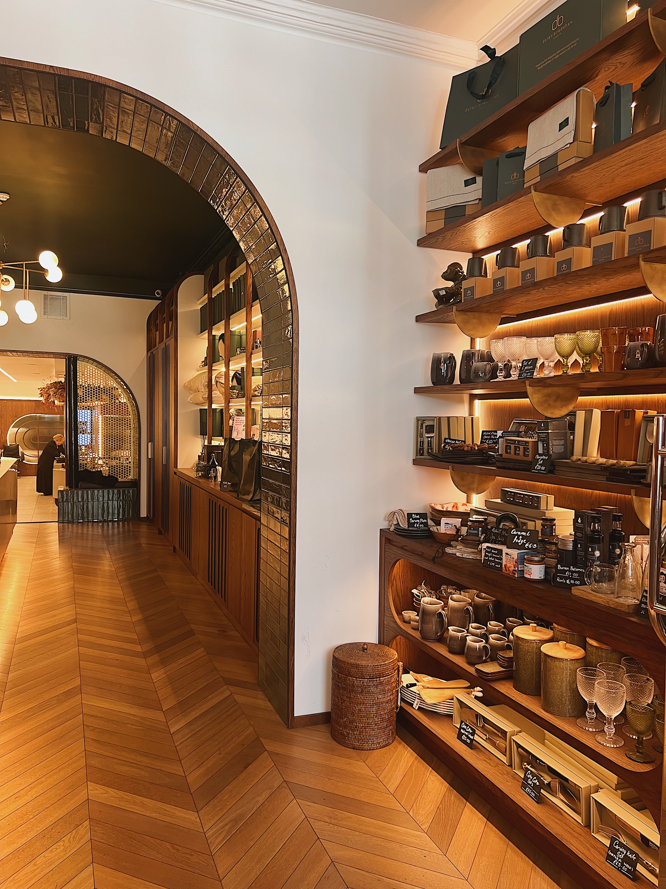
Ku.fee is in a great location, which makes it a very convenient place to stop for a coffee. The coffee is good quality and the pastry I tried was delicious as well. One thing to keep in mind is that there is no indoor seating, and there are only a few seats available outside. So it is more of a quick stop rather than a place to stay for a long time. Still, it is a lovely spot to grab a coffee and a pastry.
- Cloud Picker -
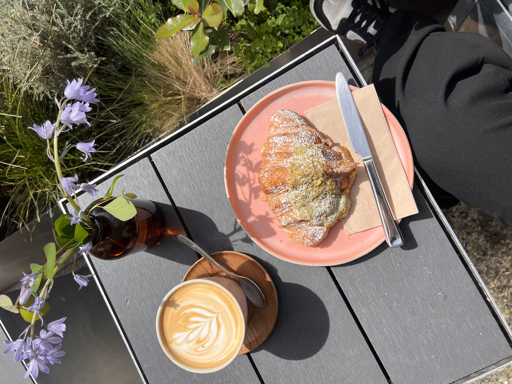
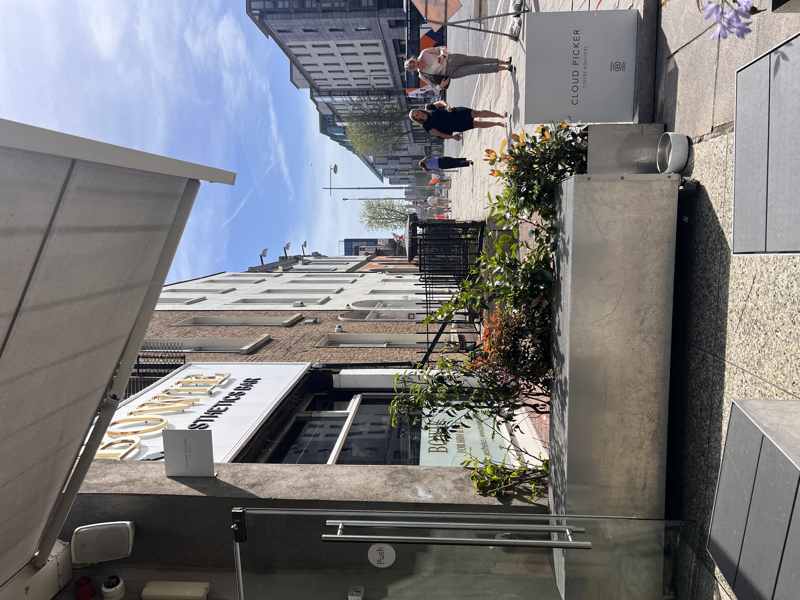
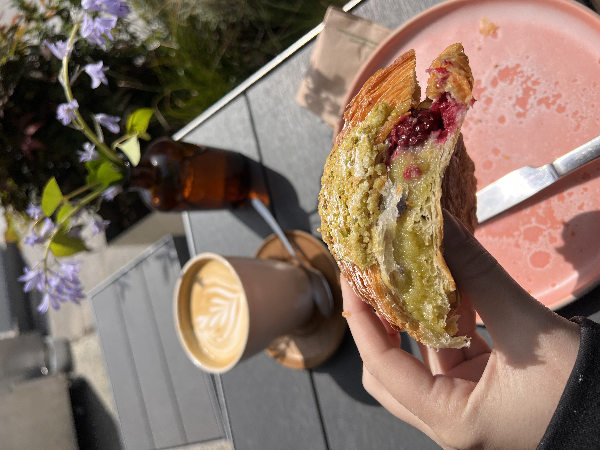
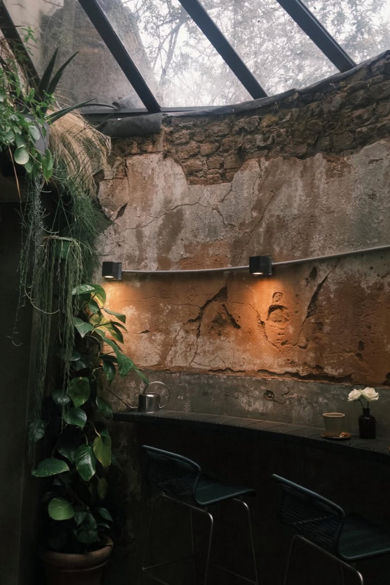
Cloud Picker is located near the train station and has more industrial style, which gives the space a unique atmosphere. One thing that makes this coffee shop special is that they roast their own beans, which adds even more quality to the coffee. The space is beautiful and there are a few places to sit both inside and outside. It is not a very large cafe, but the space feels comfortable and welcoming. They also offer a delicious selection of pastries and cakes.
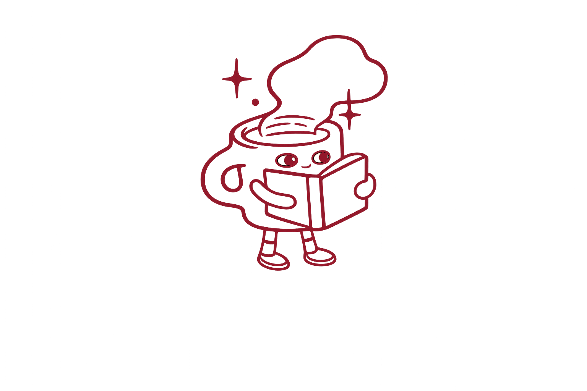